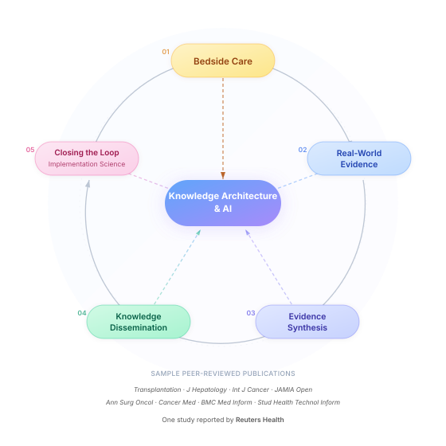
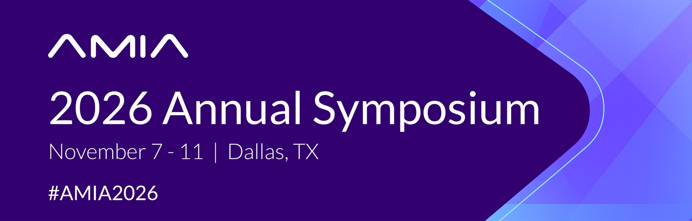

Physician-informaticist, builder, and innovator
a.k.a. the Hair-dryer CalligrapherI bridge biomedical ontologies, Datalog logic, and LLMs — integrating clinical knowledge graphs and LLMs in both directions. Beyond the AI hype and impressive demos: building neurosymbolic infrastructure in production, where domain experts keep the steering wheel and correctness matters.
The full evidence-based medicine cycle — lived, practiced, and now built into AI.

Rooted in medicine — not a hammer looking for nails.
My approach to clinical AI grows out of my history across the entire evidence-based medicine lifecycle. I know exactly where clinical knowledge breaks down — and I’m driven to lift the unbearable burden of the clinical knowledge explosion from the people who carry it every day.
I grew up competitive in math and science, and in love with art — drawing, singing, the stage. What tied them together was a love of innovation. Once, I designed a stage show to bring Eastern Asian calligraphy to life through chemistry — a hair dryer wrote the script with heat, and erased it with cool air.
A proof holds inside a closed world. Medicine mattered more — and its knowledge operating in an open world drew me in as a complex system: evidence that keeps evolving, exceptions that change everything, logic that rarely stays clean.
As clinical knowledge grew faster than anyone could carry it, the work of Yuval Noah Harari gave me my aha moment — years before large language models arrived: AI was going to radically change how medicine is practiced.
I didn’t guess at the solution; I went into health informatics and the neurosymbolic path. Having lived, practiced, and implemented the full evidence-based medicine cycle, I now build the guardrails it demands: logic and language models keeping each other honest in production.
I walked into clinical medicine and formal reasoning because they matter — never intimidated by how complicated they are. Like the calligraphy appearing under a hair dryer, the chemistry stays backstage. I hide hardcore informatics behind intuitive design — so domain experts take the center stage.
AI fails not for lack of data, but for lack of understanding.
Philosophy — the questions it asks, the ontologies it clarifies — is how we fix it. That’s my passion — and I make it approachable. As MIT Sloan put it: ‘Philosophy eats AI.’
In medicine, that philosophy is the deep, hard-won domain expertise we trust.

Signal Through the Noise — From Proof to Practice: Scaling Enterprise AI Across Health Systems and Biopharma. Joseph B. Martin Conference Center, Harvard Medical School & BIDMC.
When the industry was just beginning to grapple with LLMs in healthcare — on why high-quality clinical knowledge management is the foundation for reliable AI models.
When classification rules (inclusion criteria) quietly break, how do you find out? Using knowledge graph reasoning to surface three types of logical inconsistency — the kind conventional methods miss.
Exploring six hybrid approaches that combine knowledge graph traversal with LLM capabilities — showing when structured retrieval before generation outperforms LLMs alone.
Learn more · 02 Hybrid Retrieval + Reasoning Loop →A real-world case study dissecting how a medical AI chatbot confidently gave wrong dosing advice for dialysis patients.
Featured in AI 101: A Self-Paced Guide to AI in Medicine, a resource for physicians
Read on Medium →Reading Yuval Noah Harari’s book Nexus through the lens of clinical AI and knowledge architecture.
Whether you're working on clinical AI, exploring how knowledge representation can improve LLM reliability, or just curious about this space — I'm always happy to connect and exchange ideas.